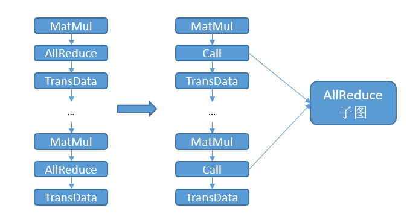

通信子图提取与复用

概述
为了提升模型精度，不断扩大模型规模是一个常见的手段，当前参数量过亿的大模型已不少见。但随着盘古等大模型规模的增加，分布式训练时所需要的通信算子数量也大幅上涨，一方面会增加模型编译的通信耗时；另一方面会消耗大量的流资源，当所需的流数量超过硬件限制，模型规模就无法继续扩大，从而成为大模型发展的一个瓶颈。
通过对通信算子进行归类提取通信子图，减少图编译中的通信算子数量，一方面可以减少通信耗时，减少模型编译耗时；另一方面减少了流的占用，使得模型可以进一步扩展：比如pipeline并行模式下micro size可以进一步增大。
本特性目前只支持Ascend后端Graph模式。
相关环境变量：
MS_COMM_COMPILER_OPT：用户可以通过环境变量MS_COMM_COMPILER_OPT打开特性开关，并配置可以复用的通信算子的上限。MS_COMM_COMPILER_OPT可以设置为-1或者一个正整数，表示开启本特性，不设置该环境变量或设置为其他值则不会开启本特性，详情请参考下表。开启本特性后，INFO日志会打印”MAX_COMM_OP_REUSE_NUM: xxx”，提示框架正在使用的可以复用的通信算子的上限。
MS_COMM_COMPILER_OPT |
说明 |
|---|---|
-1 |
开启本特性，使用框架默认的通信算子复用上限：1000 |
正整数 |
开启本特性，使用用户设置的正整数作为通信算子复用上限 |
不设置/其他 |
不开启本特性 |
由于根图多次调用通信子图会产生大量的label，当用户设置的MS_COMM_COMPILER_OPT值过大，超过硬件的label数量限制，会引发框架报错。用户可以搜索以下日志，适当减小MS_COMM_COMPILER_OPT的值：
Label list size: # 表示图编译使用的总label数量
Reuse comm op reused_comm_sub_graphs_ size: # 表示最终进行复用的通信算子数量
Start reuse # 该日志条数表示生成的通信子图的数量
基本原理
在开启本特性后，MindSpore框架将执行以下步骤：
检查是否为图模式以及是否开启本特性，否则不进入本特性的优化步骤；
找出计算图中所有可复用的通信算子；
把同类型、同shape、同dtype、同group的通信算子分在同一个组中，如果组中的通信算子数量超过一条流上所能承载的通信算子上限，则按该组的算子类型、shape、dtype创建通信算子子图。
把原计算图中的通信算子替换成Call节点，调用对应的通信子图。

由于通信子图中的通信算子只占据一条通信流，将原计算图中的通信算子替换成对通信子图的调用后，实际使用的通信流数量将下降为1。比如有30个可以分在同一组的AllReduce算子，每条通信流上至多可以承载3个通信算子，则在开启本特性前，需要10条通信流。开启本特性后，AllReduce子图只占据1条通信流，这样就节省了9条通信流。同时，由于编译阶段处理的通信算子数量减少，图编译用于通信的耗时也将减少。
操作实践
下面以Ascend8卡为例，进行通信子图提取与复用操作说明：
样例代码说明
下载完整的样例代码：comm_subgraph。
目录结构如下：
└─ sample_code
├─ comm_subgraph
├── train.py
└── run.sh
...
其中，train.py是定义网络结构和训练过程的脚本。run.sh是执行脚本。
配置分布式环境
首先通过context接口指定运行模式、运行设备、运行卡号等，并行模式为半自动并行模式，此样例采用优化器并行，并通过init初始化HCCL或NCCL通信。device_target会自动指定为MindSpore包对应的后端硬件设备。
import mindspore as ms
from mindspore.communication import init
ms.set_context(mode=ms.GRAPH_MODE)
ms.set_auto_parallel_context(parallel_mode=ms.ParallelMode.SEMI_AUTO_PARALLEL, enable_parallel_optimizer=True)
init()
ms.set_seed(1)
数据集加载、定义网络、训练网络
数据集加载、定义网络和训练网络方式与单卡模型一致，代码如下：
class Network(nn.Cell):
def __init__(self):
super().__init__()
self.flatten = nn.Flatten()
self.layer1 = nn.Dense(28*28, 512)
self.layer2 = nn.Dense(512, 512)
self.layer3 = nn.Dense(512, 10)
self.relu = nn.ReLU()
def construct(self, x):
x = self.flatten(x)
x = self.layer1(x)
x = self.relu(x)
x = self.layer2(x)
x = self.relu(x)
logits = self.layer3(x)
return logits
net = Network()
for item in net.trainable_params():
print(f"The parameter {item.name}'s fusion id is {item.comm_fusion}")
def create_dataset(batch_size):
dataset_path = os.getenv("DATA_PATH")
dataset = ds.MnistDataset(dataset_path)
image_transforms = [
ds.vision.Rescale(1.0 / 255.0, 0),
ds.vision.Normalize(mean=(0.1307,), std=(0.3081,)),
ds.vision.HWC2CHW()
]
label_transform = ds.transforms.TypeCast(ms.int32)
dataset = dataset.map(image_transforms, 'image')
dataset = dataset.map(label_transform, 'label')
dataset = dataset.batch(batch_size)
return dataset
data_set = create_dataset(32)
optimizer = nn.SGD(net.trainable_params(), 1e-2)
loss_fn = nn.CrossEntropyLoss()
def forward_fn(data, target):
logits = net(data)
loss = loss_fn(logits, target)
return loss, logits
grad_fn = ms.value_and_grad(forward_fn, None, net.trainable_params(), has_aux=True)
@ms.jit
def train_step(inputs, targets):
(loss_value, _), grads = grad_fn(inputs, targets)
optimizer(grads)
return loss_value
for epoch in range(2):
i = 0
for image, label in data_set:
loss_output = train_step(image, label)
if i % 10 == 0:
print("epoch: %s, step: %s, loss is %s" % (epoch, i, loss_output))
i += 1
运行单机8卡脚本
接下来通过命令调用对应的脚本，以mpirun启动方式，8卡的分布式训练脚本为例，进行分布式训练：
bash run.sh
训练完后，日志结果保存在log_output/1/rank.*/stdout中，示例如下：
...
The parameter layer1.weight's fusion id is 1
The parameter layer1.bias's fusion id is 1
The parameter layer2.weight's fusion id is 1
The parameter layer2.bias's fusion id is 1
The parameter layer3.weight's fusion id is 1
The parameter layer3.bias's fusion id is 1
...
epoch: 0, step: 0, loss is 2.3190787
epoch: 0, step: 10, loss is 1.9131156
epoch: 0, step: 20, loss is 1.546958
epoch: 0, step: 30, loss is 0.87771374
epoch: 0, step: 40, loss is 0.8577032
epoch: 0, step: 50, loss is 0.65985847
epoch: 0, step: 60, loss is 0.7244837
...
第一部分表示每个参数的融合index，通信时将融合相同index的参数，第二部分为Loss的结果。
若通过export GLOG_v=1开启INFO日志，会打印以下内容：
...
MAX_COMM_OP_REUSE_NUM: 3
...
表示可以复用的通信算子的上限为3。